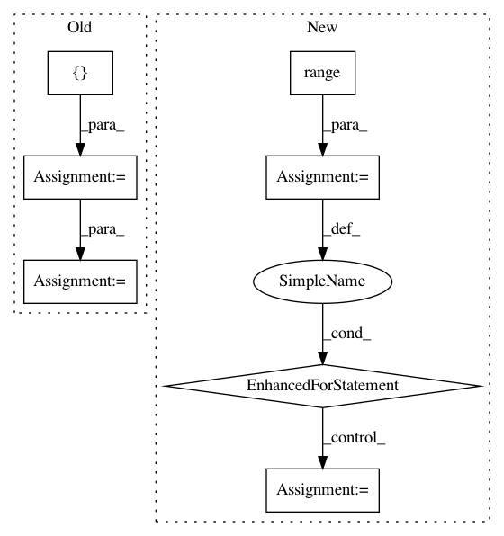

80dd4096ed186e706775adbe3663b46d719efdb0,capsulelayers.py,CapsuleLayer,call,#CapsuleLayer#,94
Before Change
return [i-1, b, outputs]
cond = lambda i, b, inputs_hat: i > 0
loop_vars = [K.constant(self.num_routing), self.bias, K.sum(inputs_hat, 1, keepdims=True)]
_, self.bias, outputs = tf.while_loop(cond, body, loop_vars)
// Routing algorithm V2. Seems not right. This may duplicate tensors by self.num_routing times.
for _ in range(self.num_routing):
After Change
_, self.bias, outputs = tf.while_loop(cond, body, loop_vars)
// Routing algorithm V2. Use for iteration. V2 and V1 both work without much difference on performance
for _ in range(self.num_routing):
c = K.softmax(self.bias)
c_expand = K.expand_dims(K.expand_dims(K.expand_dims(c, 2), 2), 0)
outputs = K.sum(c_expand * inputs_hat, 1, keepdims=True)
outputs = squash(outputs)
self.bias = K.update(self.bias, self.bias + K.sum(inputs_hat * outputs, [0, -2, -1]))
// Handling with no routing scenario. Prior bias will always be zero.
if self.num_routing == 0:
c = K.softmax(self.bias)
c_expand = K.expand_dims(K.expand_dims(K.expand_dims(c, 2), 2), 0)
outputs = squash(K.sum(c_expand * inputs_hat, 1, keepdims=True))
In pattern: SUPERPATTERN
Frequency: 3
Non-data size: 7
Instances
Project Name: XifengGuo/CapsNet-Keras
Commit Name: 80dd4096ed186e706775adbe3663b46d719efdb0
Time: 2017-10-31
Author: guoxifeng1990@163.com
File Name: capsulelayers.py
Class Name: CapsuleLayer
Method Name: call
Project Name: taehoonlee/tensornets
Commit Name: b9927f30cb9c92040c30d0fe8c735d8baea167b2
Time: 2019-03-13
Author: me@taehoonlee.com
File Name: tensornets/layers.py
Class Name:
Method Name: gconvbn
Project Name: cesium-ml/cesium
Commit Name: a03930f6a94bb772222d00b819c3ff824e28ddcc
Time: 2016-08-30
Author: brettnaul@gmail.com
File Name: cesium/tests/test_transformation.py
Class Name:
Method Name: test_train_test_split